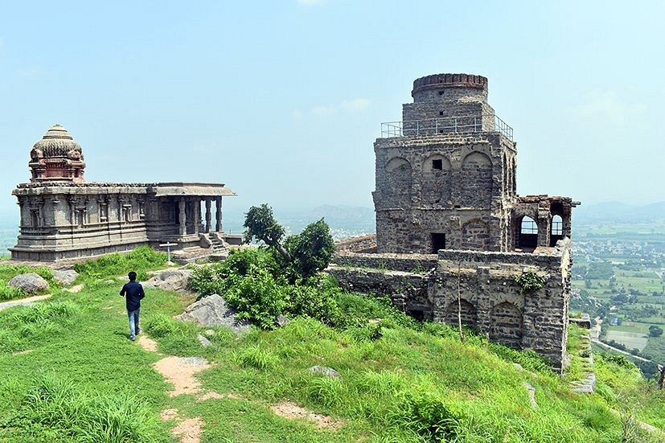
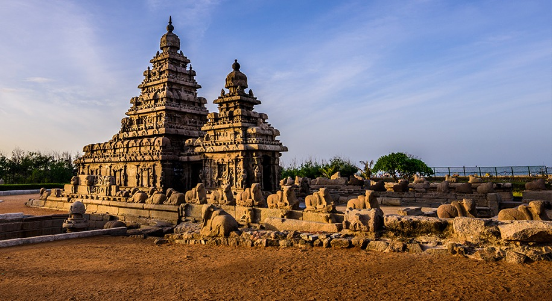
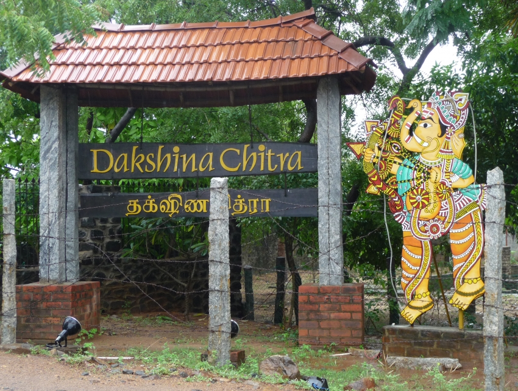

Gingee Fort
Add ticket
Gingee Fort or Senji Fort in Tamil Nadu, India is one of
the surviving forts in Tamil Nadu, India.
Mahabalipuram Monuments
Add ticket
Mahabalipuram, also known as Mamallapuram, is a UNESCO World Heritage
Site located on the coast of the Bay of Bengal.
The site features a group of
ancient temples and monuments, including the famous Shore Temple.
Fort St. George

Add ticket
Fort St. George is a fortress in the coastal city of Chennai, India.
Founded in 1639, it was the first English fortress in India.
DakshinaChitra Heritage Museum
Add ticket